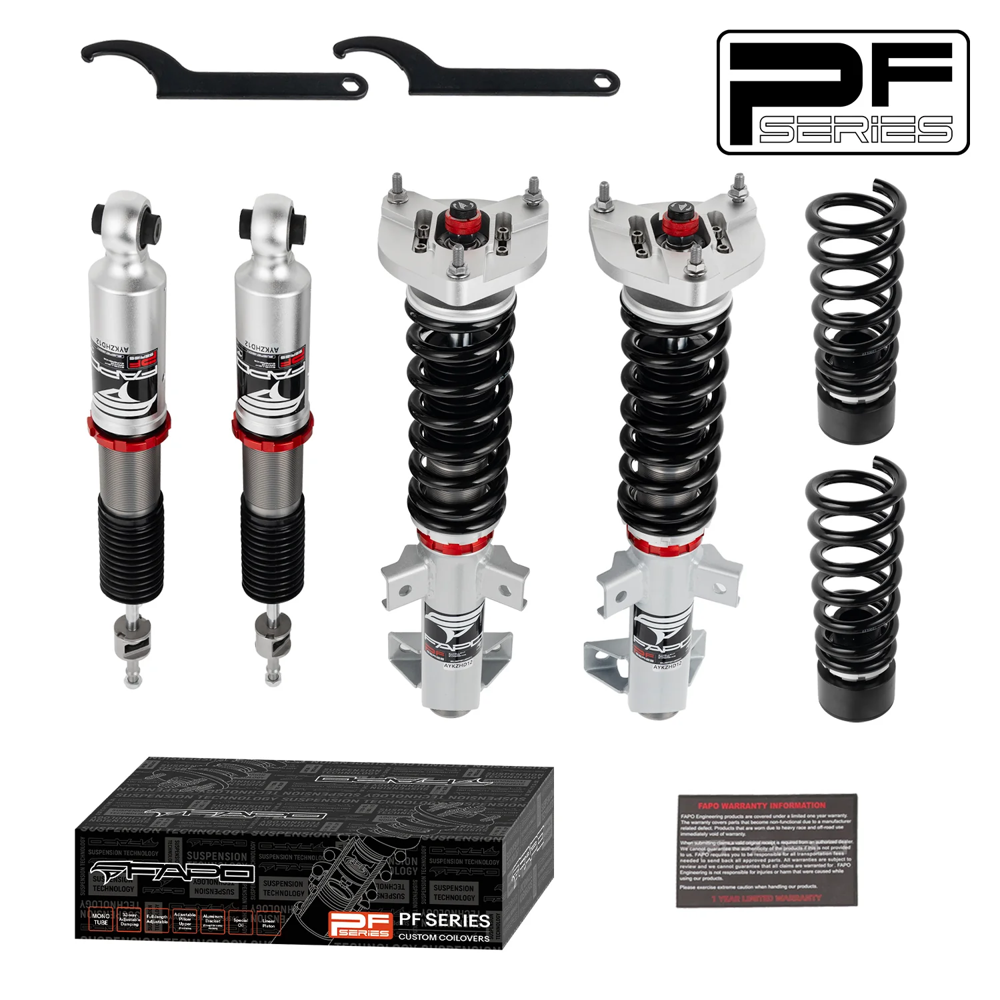

1 / 2132-Way Adjustable tłumienie Zawieszenie gwintowane do Mercedes-Benz C-Class 3rd Gen RWD W204/S204 2007-2014 PF056430
Kompatybilność pojazdu Mercedes-Benz Klasa C 3. generacji RWD W204/S204 (2007-2014) Mercedes-Benz Klasa E Coupe AMG / Cabrio RWD A207/C207/W207 (2010-2015) Pakiet zawiera Gwinty przednie × 2 szt Gwinty tylne × 2 szt Klucz × 2 szt Notatka: Nasz zestaw gwintowany umożliwia obniżenie samochodu o 1-1,5 cala poniżej wysokości fabrycznej, nawet przy maksymalnej regulacji wysokości. Przed zakupem upewnij się, że chcesz obn…
Vehicle Compatibility Mercedes-Benz C-Class 3rd Gen RWD W204/S204 (2007-2014) Mercedes-Benz E-Class Coupe AMG / Convertible RWD A207/C207/W207 (2010-2015) Package Includes Front coilovers × 2 pcs Rear coilovers × 2 pcs Wrench × 2 pcs Note: Our coilover kit is designed to lower your car by 1-1.5" below the factory height, even at maximum height adjustment. Please ensure you want to lower your vehicle before purchasing. Features Mono-tube shock design provides larger capacity for oil and gas. Adjustable ride height for personalized performance. Adjustable pre-load spring tension for improved handling. High tensile performance spring - After 600,000 continuous tests, the spring distortion is less than 0.04%. Special surface treatment enhances durability and performance. All inserts come with fitted rubber boots to protect the damper and keep it clean. Improves handling performance without sacrificing comfort. A fast and affordable way to upgrade your car's appearance. Easy installation with the proper tools. Ideal for track, drift, fast road use, and daily driving. Accessories shown in the photos are included. Default 1-year warranty for any manufacturing defect, upgrade to 2 years with our Extended Warranty Program. Technical Specifications Spring rate Front: 8 kg/mm (446 lbs/in) Spring rate Rear: 10 kg/mm (557 lbs/in) Adjustable height: Yes Adjustable camber plate: Front coilovers only; Rear with standard top mounts Adjustable damper: 32 Levels Adjustable Damper Force
2999,99 PLN
Opis produktu
Kompatybilność pojazdu
- Mercedes-Benz Klasa C 3. generacji RWD W204/S204 (2007-2014)
- Mercedes-Benz Klasa E Coupe AMG / Cabrio RWD A207/C207/W207 (2010-2015)
Pakiet zawiera
- Gwinty przednie × 2 szt
- Gwinty tylne × 2 szt
- Klucz × 2 szt
Notatka:Nasz zestaw gwintowany umożliwia obniżenie samochodu o 1-1,5 cala poniżej wysokości fabrycznej, nawet przy maksymalnej regulacji wysokości. Przed zakupem upewnij się, że chcesz obniżyć pojazd.
Cechy
- Konstrukcja amortyzatora jednorurowego zapewnia większą pojemność dla ropy i gazu.
- Regulowana wysokość jazdy dla spersonalizowanych osiągów.
- Regulowane napięcie sprężyny wstępnego obciążenia dla lepszej obsługi.
- Sprężyna o wysokiej wytrzymałości na rozciąganie — po 600 000 ciągłych testów odkształcenie sprężyny jest mniejsze niż 0,04%. Specjalna obróbka powierzchni zwiększa trwałość i wydajność.
- Do wszystkich wkładek dołączone są gumowe buty chroniące amortyzator i utrzymujące go w czystości.
- Poprawia właściwości jezdne bez utraty komfortu.
- Szybki i niedrogi sposób na poprawę wyglądu Twojego samochodu.
- Łatwa instalacja przy użyciu odpowiednich narzędzi.
- Odpowiedni na tor, driftu, szybkiej jazdy po drogach i codziennej jazdy.
- W zestawie akcesoria widoczne na zdjęciach.
- Standardowa roczna gwarancja na każdą wadę produkcyjną, możliwość rozszerzenia do 2 lat w ramach naszego programu rozszerzonej gwarancji.
Dane techniczne
- Tempo sprężyny Przód:8 kg/mm (446 lbs/in)
- Tempo sprężyny Tył:10 kg/mm (557 lbs/in)
- Regulowana wysokość:Tak
- Regulowana płyta camber:Tylko przednie gwintowane; Tył ze standardowymi mocowaniami górnymi
- Regulowany amortyzator:32 poziomy regulowanej siły amortyzatora
Vehicle Compatibility
- Mercedes-Benz C-Class 3rd Gen RWD W204/S204 (2007-2014)
- Mercedes-Benz E-Class Coupe AMG / Convertible RWD A207/C207/W207 (2010-2015)
Package Includes
- Front coilovers × 2 pcs
- Rear coilovers × 2 pcs
- Wrench × 2 pcs
Note: Our coilover kit is designed to lower your car by 1-1.5" below the factory height, even at maximum height adjustment. Please ensure you want to lower your vehicle before purchasing.
Features
- Mono-tube shock design provides larger capacity for oil and gas.
- Adjustable ride height for personalized performance.
- Adjustable pre-load spring tension for improved handling.
- High tensile performance spring - After 600,000 continuous tests, the spring distortion is less than 0.04%. Special surface treatment enhances durability and performance.
- All inserts come with fitted rubber boots to protect the damper and keep it clean.
- Improves handling performance without sacrificing comfort.
- A fast and affordable way to upgrade your car's appearance.
- Easy installation with the proper tools.
- Ideal for track, drift, fast road use, and daily driving.
- Accessories shown in the photos are included.
- Default 1-year warranty for any manufacturing defect, upgrade to 2 years with our Extended Warranty Program.
Technical Specifications
- Spring rate Front: 8 kg/mm (446 lbs/in)
- Spring rate Rear: 10 kg/mm (557 lbs/in)
- Adjustable height: Yes
- Adjustable camber plate: Front coilovers only; Rear with standard top mounts
- Adjustable damper: 32 Levels Adjustable Damper Force
FAPO Polska
Ten produkt obsługujemy lokalnie
Autoryzowana obsługa
FAPO Polska prowadzi katalog, kontakt i zamówienia bez odsyłania klienta do zewnętrznych sklepów.
Dobór po aucie
Sprawdzamy dopasowanie produktu do pojazdu, rocznika i wersji przed finalizacją zamówienia.
Wsparcie po zakupie
Masz kontakt w Polsce w sprawach zamówień, wysyłki, gwarancji i zwrotów.